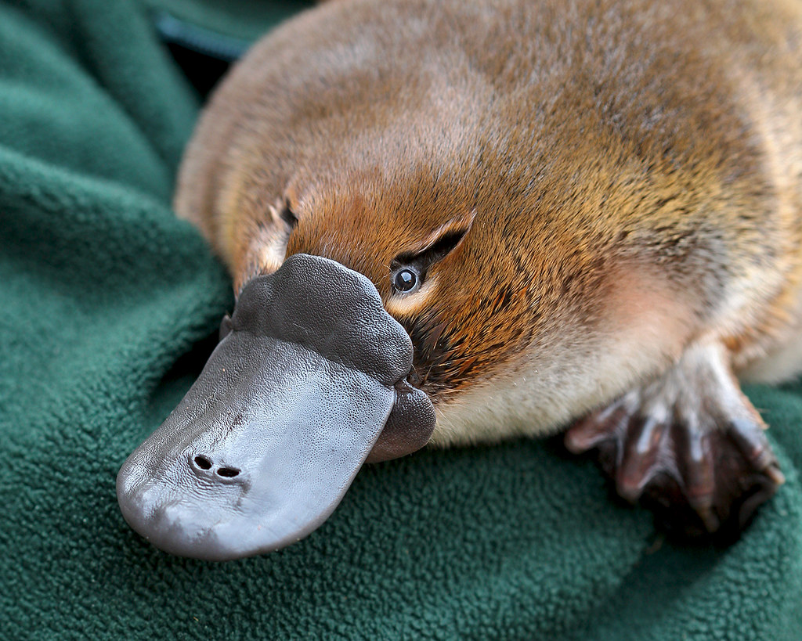

Some of the strangest (real) creatures you will ever see ...
 Platypus
Spiny Anteater
Tube-Nosed Fruit Bat
Pink Fairy armadillo
For more creatures, go to
The Fifty Rare Creatures That Are Almost Too Weird to Actually Exist
 Spiny Anteater
Spiny Anteater
 Tube-Nosed Fruit Bat
Tube-Nosed Fruit Bat  Pink Fairy armadillo
Pink Fairy armadillo